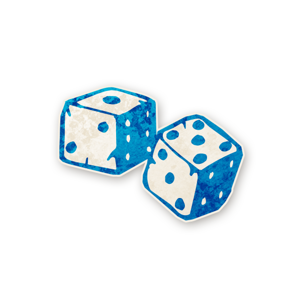

Gambler (นักพนัน)

ในแต่ละคืน (ยกเว้นคืนแรก) เลือกผู้เล่น 1 คน และทายตัวละคร หากทายผิด คุณจะตาย (เลือกตัวเองได้)
- การเลือกตัวละครในตอนกลางคืน ให้คุณชี้ไปยังผู้เล่น และชี้ตัวละครที่อยู่ในกระดาษ (Characters Reference Sheet)
- Gambler จะไม่ทราบว่า ตัวเองทายถูก หรือ ทายผิด
- Gambler เลือกผู้เล่นที่ยังมีชีวิตอยู่ หรือตายแล้วก็ได้ หรือเลือกตัวเองก็ได้
ตัวอย่าง
- Gambler เลือก อาร์ม (Minstrel) และชี้มาที่ Minstrel ในกระดาษ จากนั้นปีศาจเลือกฆ่า Gambler วันรุ่งขึ้น Gambler ตาย แต่ไม่รู้ว่าตายเพราะอะไร
- ขวัญ คือ Devil’s Advocate แต่หลอกว่าตัวเองคือ Pacifist จากนั้น Gambler ทายว่า ขวัญ คือ Pacifist ทำให้ Gambler ตาย
Tips & Tricks
- คุณควรใช้ความสามารถเพื่อยืนยันตัวคนดีให้ได้ โดยเฉพาะคนดีที่มีความสำคัญ เช่น Exorcist, Courtier
- คุณสามารถคุยกับผู้เล่นและเปิดเผยตัวเองก่อน ว่าเป็น Gambler และโน้มน้าวให้ผู้เล่นบอกตัวละครของเขา เพื่อให้คุณทำการพิสูจน์
- คุณอาจต้องยอมตายเพื่อพิสูจน์ว่าคุณคือ Gambler จริงๆ คุณอาจคุยอย่างลับๆกับคนที่คุณไว้ใจ และบอกว่า คุณกำลังจะตายอย่างแน่นอน (โดยการจงใจทายผิด) เพื่อพิสูจน์ตัวเอง และข้อมูลที่คุณเคยให้
Bluffing
- คุณสามารถช่วยเหลือปีศาจ และทำให้ทุกคนเชื่อว่าเขาเป็นตัวละครใดๆก็ได้ แล้วแต่จะวางแผน
- คุณสามารถเคลมว่า เลือกคนดี แล้วทายตัวละคร แต่ผิด (คุณตาย) ก็ได้ เพื่อทำให้ทุกคนสงสัยคนนั้น แต่ก็มีความเสี่ยงสูงเช่นกัน และคุณต้องสื่อสารกับปีศาจ เพื่อให้ปีศาจฆ่าคุณด้วย
- หากคุณบังเอิญตายในตอนกลางคืน คุณสามารถใช้โอกาสนี้ เคลมว่าคุณเป็น Gambler แล้วทายผิดได้
- หากคุณอยู่รอดได้นาน เพราะทายถูกตลอด คุณจะดูน่าสงสัย คุณอาจจะบอกว่าคุณทาย 2-3 ตัวละครถูก แล้วหลังจากนั้นคุณทายตัวเอง